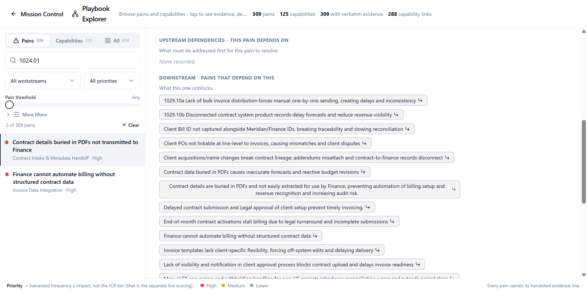
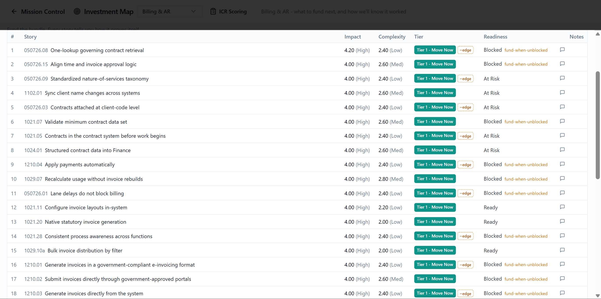
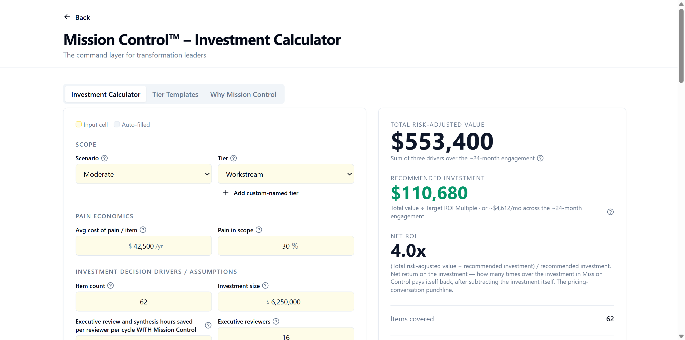

Your company already knows where it should invest next.
The knowledge doesn't survive the trip to the room where the decision gets made.
The problem is not effort. It is distance.
Three places you feel it happen
If you recognize all three, keep reading. If you don't, that's useful information too - this probably isn't for you yet.
Here is what one person actually said. Watch it travel.
What if none of it had disappeared?
MissionControl™.
The same evidence. The same voice. The same room, nine months later - the evidence is still attached to who said it, why it mattered, and what else it touches. Nothing had to disappear for the decision to get made.
The reasoning reconnects.
Every important conclusion should be traceable back to the operational evidence that justified it. Not "consultants recommended it." Specifically: this pain, in this function, described by this person, in these words.


Contract details buried in PDFs not transmitted to Finance
Revenue Accountant - Contract Intake & Metadata Handoff Evidence, kept: the workshop transcript, October 8, 2025, 12:29 - the words checked against it, exactly.Click the conclusion, and the evidence underneath it is right there - who said it, in what session, connected to which function and which data flow. A leader who wasn't in the room can follow the exact chain from a stakeholder's own words to the finding built on them. Nothing here has to be taken on faith.
A map of every piece of evidence, connected. We call it a Findings Map.
Now pull back. Everything downstream of the same pain
Here is a real pain point: the terms that drive invoicing, pricing and forecasting live inside Contract documents, and Finance receives only the contract number. Every rate, cap and milestone gets reopened, interpreted and rekeyed by hand. In the evidence record, seventeen other documented pains depend directly on this one - invoice setup, client billing identifiers, purchase-order matching, contract lineage when a client is renamed or acquired, forecasts, renewals, billing automation - and thirty-four once you follow the chain. Relief is recorded as less manual re-entry and a faster close, measured as the reduction in invoices that have to be corrected by hand. That measure comes from the same discovery record as the finding itself.
Recorded in the evidence: seventeen pains depend on this one. Thirteen of them are in the frame above.
Finding the one pain that thirty-four others trace back to, across three hundred documented pains and every dependency recorded between them, is not something a person does by hand. It is what a connected evidence base makes routine.
Weight the same map by what each problem costs to fix and what fixing it is worth, and it becomes the Investment Map - which is where the next question gets answered.
"There's good info in the contracts, but it's buried in PDFs or Word docs. Few of these details get passed to Finance."
The reasoning tells you what to fund first.
Which problem causes the most other problems? Answer that, and the order of investment stops being set by whoever argued loudest. We call that problem the foundational pain.


Every Investment Map answers these questions and more.
- Which pain is foundational?
- What is ready to be funded together?
- What should wait?
Contract details buried in PDFs not transmitted to Finance
Revenue Accountant - evidence kept from the Findings Map Move Now. Thirty-four pains trace back to it.The foundational pain should be considered for funding first - not the pain that was proposed first, or argued for loudest. Prioritization stops being a gut call and becomes visible, explainable, and challengeable.
That same pain - the Revenue Accountant rebuilding contract terms by hand from documents Finance was never sent - is the one the evidence ranks near the top of this workstream (the full slate of Billing and AR initiatives being considered together), and the one that thirty-four other documented pains trace back to.
Why fund this first?
Because it is foundational: it is the first link in the chain, with no dependency of its own, and seventeen documented pains depend on it directly, thirty-four in all - more than any other item in the workstream. It scores high on impact for moderate complexity, which places it in the first band, eighth of thirty-six fundable items. One condition sits in front of it: the legal and contract authority over those source documents has to clear it before work can start. The map marks it At Risk for exactly that reason. The map shows that before capital moves, not after.
(How the ranking is made: every problem gets a single score for how urgent, how connected, and how ready it is - we call it an ICR score - from five impact inputs and five complexity inputs, every one open to inspection. This one scores high on impact for moderate complexity, and the condition in front of it is recorded beside the score, not buried under it. Change an input and the ranking moves with it - and leadership can see which one.)
The map makes the "why this first" argument visible enough to defend in a room full of people who weren't there for the discovery work.
The reasoning proves what it was worth.
What changes when this closes? Three things:
Faster relief
Every unrelieved pain point has a real, ongoing cost - a check the organization keeps writing every month it stays unresolved. Relief stops that check.
Faster understanding
Leadership reaches real understanding directly - without the hours and cost of getting up to speed on discovery work they weren't in the room for.
Better sequencing
Less capital gets consumed by avoidable delay, rework, and wrong-order investment.

What is solving this pain worth?
$790,500 a year
Sixty-two documented pain points across this illustrative workstream, at an average annual cost of $42,500 each - about $2,635,000 a year in pain the organization is carrying today. This scenario targets 30% of it for relief: $790,500 a year the organization could stop paying, on inputs your own people set. Illustrative example - a different scenario than the Billing and AR workstream above; your organization's own numbers are calculated live.
And here is how we prove it actually did.
Evidence before funding. Accountability after funding.
The business case should survive the investment decision. Most business cases function as permission slips - built to get funding, then forgotten. Ours doesn't end at approval: the reasoning used to authorize an investment should not disappear after funding, and realized value has to be checked against the case that justified the capital.
The confidence that every dollar you allocate is backed by something real. We call it an Investment Conscience.
The real answer usually gets worked out long before anyone builds a slide about it.
There's a name for that.
This is Learning Velocity - the same force behind how long a company stays in its prime - now working at the speed of a single decision.
Everything your organization has already found out about itself, kept where the next decision can reach it. We call it the Playbook.
MissionControl™ is the missing operating system between what your people know and where you invest.
This is for you if
- You have started a business transformation.
- You have real capital decisions ahead.
- You have already done some operational discovery, current-state documentation, process analysis, workshop work, or equivalent evidence gathering.
- You want future business-transformation investments to be approached with greater fiduciary discipline.
- You want the ability to compare realized value with the value used to justify or forecast the investment.
This probably isn't for you yet if
- You have not started a business transformation.
- You do not have meaningful capital-allocation decisions ahead.
- You have no operational discovery evidence yet - no transcripts, pain points, current-state findings, process documentation, or equivalent source material.
What Should You Fund First?
Let's talk. We'll build a working map from a small subset of your own evidence. We'll interrogate it together for 30 minutes. No charge.
Capital decisions should stay connected to the operational evidence that justified them.
This is the thinking behind Investment Conscience.
Explore the live MissionControl™ Investment Calculator yourself.